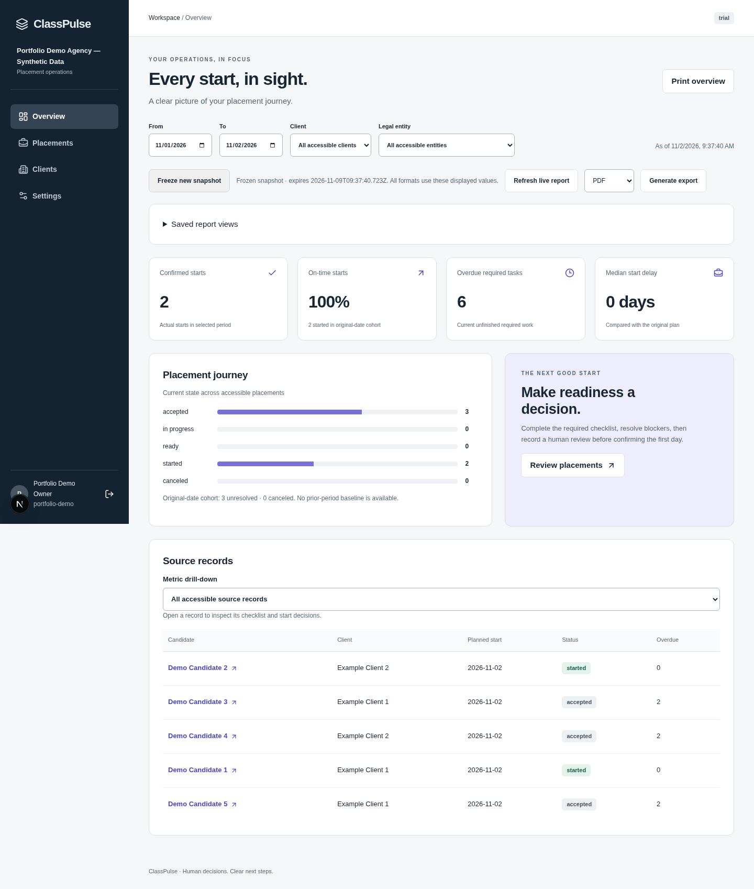

Static portfolio showcase. The dashboard and reports use fictional demonstration data. This page is not the live application.
RECRUITMENT OPERATIONS PROTOTYPE
A clear path from accepted offer to first day.
ClassPulse brings placement checklists, client handoffs, exceptions and human readiness decisions into a multi-tenant workspace, with operational dashboards and generated PDF, CSV and Excel reports.
Current scope: agency placement coordination. Full HRMS, payroll and live payments are outside this prototype. Production launch remains pending.
The working dashboard

Owned handoffs
Versioned checklists, named task owners, exceptions and separate human readiness and first-day decisions.
Scoped access
Tenant isolation, permissions and explicit client-participant access. The local demonstration uses synthetic data.
Traceable reports
Freeze a dashboard snapshot, then generate the same values in PDF, CSV and XLSX through a background worker.
Open the actual sample files
These files were generated by the application's UI and worker from one frozen synthetic workspace. They are exported examples, not a live database or payment/compliance certificate.
Run it on your Windows computer
Install Node.js 24 and Docker Desktop, download the working branch and open the folder containing package.json. Then use a terminal:
npm.cmd ci
npm.cmd run demoThe startup command prints the local browser address and sample sign-in details. It starts the web app, database, Redis and worker together, preserving existing data. Read the owner walkthrough and hosting map.
Stack: Next.js · TypeScript · PostgreSQL/Prisma · Redis/BullMQ. A public interactive deployment requires hosting and provider setup; no live application URL is represented on this page.